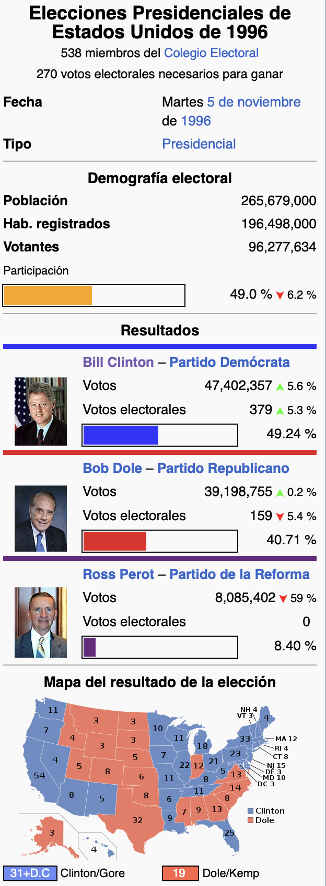

Sesión 1

FACULTAD DE CIENCIAS SOCIALES - PUCP
Curso: POL 304 - Estadística para el análisis político 2 | Semestre
2023 - 2
Jefas de Práctica: Karina Alcántara 👩🏫 y Lizette Crispín 👩🏫
MUNDO TIDYVERSE

Tidyverse es un conjunto de de paquetes de R para ciencia de datos, nos ayuda a trabajar las bases de datos. Ha sido desarrollado por RStudio.
Es consistente : Todos los paquetes tienen una misma estructura
Concatenable: Siempre se pueden unir pequeñas partes para resolverlos
Funcional: Como casi todo R, promueve la programación
Para cada paso de tratamiento de datos existe un paquete, se puede pasar desde cargar/importar los datos, limpiarlos, transformarlos, visualizar, modelarlos y finalmente comunicarlos.
Para importar datos tenemos readr, haven y readxl. Para limpiar los datos usamos tidyr, para transofrmar los datos se usa dyplr, que lo veremos a continuación, para modelar se usa purr o broom, para visualizar se usa ggplot2. Finalmente, para comunicar se usa knitr para publicar los resultados por html, pdf, ppt. y rmarkdown es la estructura de knitr.
Algunos les gusta usarlo porque facilita el análisis y manipulación de datos y es más rápido, pero, por otro lado, tiene otra lógica en la programación. En vez de usar “,” para diferenciar entre comandos, usar %>%,
Instalando el paquete de tidyverse te incluye los 8 paquetes. Pero, eso sí, toma más tiempo de lo debido. Por eso, en esta ocasión, se ha descargado los que necesitaremos ahora
# Paquetes que se usarán
library(dplyr)
library(ggplot2)
library(data.table)
library(devtools)
library(foreign)
library(rio)Sobre la data a analizar

PAQUETE DPLYR
El paquete dplyr es el más útil en R para la manipulación de datos, una de las ventajas es que se pueda usar el pipe para combinar diferentes funciones en R. Para no tener que escribirlo, se genera mediante control shift M. En pocas palabras, reemplaza la “,” para concatenar(unir) varios comandos.
FILTER: filtrar filas según un criterio
Filtra casos o filas que cumplen con el criterio. Por ejemplo, aca estamos filtrando de la data usa las personas que son judíos
SELECT: Seleccionando subconjunto de variables
Selecciona columnas o mejor dicho, variables de su conjunto de datos, según nombre.
En este comando estamos especificando que queremos seleccionar de la data usa, las variables interés en las campañas (intecamp) y sexo.
Si queremos quitar variable ponemos el signo de menos. Salen todas las varibales menos las del si voto en las elecciones del 96 (voto96) y por quién.
Lo podríamos volver un objeto para poder trabajar con ello
SUMMARISE: Crear resumenes de datos
Resume cualquiera de las funciones anteriores, para aplicarla a un grupo de datos.
En este caso, queremos sacar el promedio de aprobación de Al Gore luego de su gestión. Para eso usamos sumarise. Mencionamos los datos de la base usa, luego la variable que se creará en base a ella, que será la media de la variable gorepst, omitiendo los valores perdidos
Solo con variables numéricas (ojo)
#Promedio aprobación Al Gore post elecciones
usa %>%
summarise(promgorepost = mean(gorepst, na.rm = T))
#CORROBORAMOS
class(usa$gorepst) Acá nos menciona un error, dice que el argumento no es numérico. Las convertimos
COUNT: contar casos en base a una variable
Nos ayuda a contar las observaciones.
Vamos a contar los casos de las personas de acuerdo al nivel educativo.
Se puede observar que la mayoría tiene un nivel educativo mayor al de secundaria.
MUTATE Y ARRANGE
Crea nuevas columnas conservando las variables existentes. En esta ocasión estamos creando una nueva variable que vendría a ser la diferencia de la aprobación de Al Gore antes y luego de su gestión.
Esta función es un poco más larga, pero no es difícil. Primero crearemos una nueva variable que será la diferencia de la aprobación de Al Gore antes y luego de su gestión, y luego de eso, queremos que esa variable creada, se ordene de manera descendente. Finalmente, queremos que los resultados muestre únicamente las variables de ID, difgore, gorepre y gorepst para ver la diferencia.
usagoredesc<- usa %>%
mutate(difgore = gorepst - gorepre) %>% arrange(., desc(gorepst)) %>%
select(id, difgore, gorepre, gorepst)Vamos a poner gorepost como función en arrange para ver su aprobación más alta.
TRANSMUTE
También existe la función transmute, que realiza lo mismo solo que muestra únicamente la nueva variable creada (no se agrega a la base de datos)
Crearemos la vida variable de disfrencia pero con la aprobación George Bush
Vamos a cambiarla a numérica, para evitar que ocurra el mismo error.
group_by: Agrupar datos
Agrupa diferentes observaciones de manera que el conjunto de datos original no cambie.
Aca estamos indicando que se agrupe la data en base a posición política.
Finalmente, agruparemos datos y usaremos más de una función
En el primer ejemplo, lo que haremos es agrupar los datos mediante la posición política, y usaremos sumarise para sacar el promedio de la aprobación de Bush post gestión Vemos los resultados. Vemos una tendencia que los más conservadores tenían una aprobación más alta de Bush
Ahora con Al Gore ¿los datos se voltean? Los encuestados que se consideran muy Liberales, aprueban más la gestión de Al Gore, a diferencia de los muy conservadores.
REPASO MODELO LINEAL GENERAL MÚLTIPLE
Recordemos que con los modelos buscamos medir el efecto de un conjunto de variables independientes sobre una dependiente y también con el modelo creado predecir.
En este modelo es indispensable contar con una variable dependiente numérica continua.
Como se mencionó en la clase anterior, para obtener el mejor modelo con la recta que capte la mayoría de las coordenadas, se realizaba el método de los mínimos cuadrados (el cual ya es calculado por R).
Como no todo es perfecto, para poder realiar este método, se tienen que cumplir 5 supuestos, y así asegurar que el modelo que creemos sea estable y pueda predecir correctamente.
Para poder repasar nuevamente los pasos de análisis y los requisito usaremos la base de datos de la clase pasada, que contenía variables sobre los casos de COVID a nivel regional, y otras variables sociodemográficas, económicas etc.
Regresión Lineal
Ejemplo 1: Prediciendo los casos de COVID-19
Obtenemos nuestra base de datos:
RECORDANDO LA REGRESIÓN LINEAL
Calcularemos un modelo para predecir los casos de COVID-19 a partir del gasto real por hogar mensual
Variable dependiente: Casos COVID-19 por cada 100 mil personas
Variable independiente: gasto real por hogar mensual (var5)
Seguimos nuestro flujograma para evaluar el modelo:
- Nos preguntamos si el modelo es válido
- Qué tanto explica el modelo
- Si la variable independiente aporta al modelo
- Identificamos los coeficientes
¿Qué sucede si ahora agregamos más variables? 😼
Calculamos nuestro modelo, en este caso usaremos lo siguiente:
Variable dependiente: Casos COVID-19 por cada 100 mil personas
Variables independientes: Stock de capital por trabajador (var3) + gasto real por hogar mensual (var5) + morbilidad (var20).
modelo1 <- lm(competitividad$casos_100k~ competitividad$var3+competitividad$var5+
competitividad$var20)
summary(modelo1)Seguimos nuestro flujograma para evaluar el modelo:
- Nos preguntamos si el modelo es válido
- Qué tanto explica el modelo
- Si las variables independientes aportan al modelo
- Identificamos los coeficientes
- Construimos la ecuación 🤺